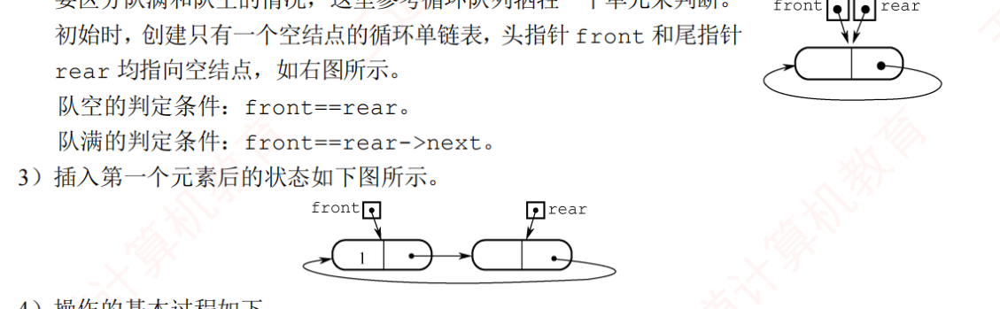

栈
第一卷 第04话
栈与队列 出栈序列、循环队列判满、表达式求值、递归与函数调用
数据结构 约 60 分钟
真题火力｜2009–2025 这一话的考点出现 20 题，覆盖 15/17 年 09
10
11
12
13
14
15
16
17
18
19
20
21
22
23
24
25
空白 = 没考 · 网点 = 1 题 · 黑 = 2 题 · 红 = 3 题及以上（由题库逐题统计） 栈和队列本身很简单，所以真题考得很刁：出栈序列、循环队列判满、中缀转后缀的栈内容。这一话把四类题都做成机械操作 。
01 栈：只能从一头进出比方 羽毛球筒 最后塞进去的那颗最先被倒出来：LIFO（后进先出）。n 个元素入栈，出栈序列的总数是卡特兰数。
术式 卡特兰数与判合法 n 个不同元素的合法出栈序列数：C(2n,n) / (n+1)，n=3 时 5，n=4 时 14，n=5 时 42。对每个已出栈元素，在它之后出栈且比它先入栈的元素，必须按入栈的逆序出现 。
判「不可能的序列」 看序列中任意一个数 x：比 x 小（先入栈）且排在 x 后面的那些数，必须是递减 的。出现递增就不合法。例：1,2,3,4 入栈，序列 3,1,2,4 中，3 后面比 3 小的是 1,2，递增，不合法。
顺序栈的栈顶指针有两种约定，答案完全不一样，一定要看清题目：
约定 入栈 出栈 栈空 栈满 top 指向栈顶元素，初值 −1 S[++top]=xx=S[top--]top==-1top==MaxSize-1top 指向下一个空位，初值 0 S[top++]=xx=S[--top]top==0top==MaxSize
共享栈 ：两个栈共用一个数组，栈底分放两头，向中间长。栈满条件是 top1+1==top2。链栈 ：头插头删，表头当栈顶，所有操作 O(1)，没有上溢问题。
2011 实战 出栈序列·计数
元素 a,b,c,d,e 依次进入初始为空的栈中，若元素入栈后可停留、可出栈，直到所有元素都出栈，则在所有可能的出栈序列中，以元素 d 开头的序列个数是（ ）。
A 3 B 4 C 5 D 6
d 第一个出→a,b,c 已按序停在栈中(顶为 c)，其相对出栈序固定为 c,b,a；e 可在这三者的任意“空档”里入栈即出。d _ c _ b _ a _ 中 e 有 4 个插入位→
4 种：decba、dceba、dcbea、dcbae。
d 先出，说明 a,b,c 都已在栈里且只能按 c,b,a 的相对顺序出；e 可以插在任何位置，四个位置就是 4 种。
再深一层 固定骨架 d…c…b…a，e 有 4 个落点，选 B。
2013 实战 出栈序列·计数
一个栈的入栈序列为 1,2,3,…,n，出栈序列是 P₁,P₂,P₃,…,Pₙ。若 P₂=3，则 P₃ 可能取值的个数是（ ）。
A n−3 B n−2 C n−1 D 无法确定
3 之后的 4,5,…,n 都可作 P₃（入到该数即出），共 n−3 个；再看 1、2：P₁ 可为 1 或 2 或更大，当 P₁=1 时 P₃ 可取 2，当 P₁=2 时 P₃ 可取 1。故 P₃ 可取除 3 外的所有值，个数
n−1 。
枚举 P₂=3 时 P₃ 还能取谁：除了 3 自己，其他都有可能。这类计数题用小 n（比如 n=4）列举最快。
再深一层 P₂=3 后，P₃ 能取 {1,2,4,5,…,n}=全体除 3，共 n−1 个。选 C。
2009 实战 栈+队列·容量
设栈 S 和队列 Q 的初始状态均为空，元素 abcdefg 依次入栈 S。若每个元素出栈后立即进入队列 Q，且 7 个元素出队的顺序是 bdcfeag，则栈 S 的容量至少是（ ）。
A 1 B 2 C 3 D 4
队列 FIFO：出队顺序=出栈顺序=bdcfeag。据此还原入/出栈过程，模拟得栈内元素最大深度为
3 （如 a,c,e 同时在栈中的时刻），故容量至少 3。
模拟一遍入出，记录栈内最大高度即可。按序列手动推：a 入、b 入 b 出（高 2）、c 入、d 入 d 出、c 出……
再深一层 队列不改序→出栈序列就是 bdcfeag。用“Push/Pop 各 +1/−1、记录峰值”模拟，峰值=3。选 C。
02 队列：两种判满FIFO（先进先出）。数组实现时，rear 一直走到末尾就「假溢出」了，解决方法是取模，也就是循环队列 。
▣ 循环队列（牺牲一个单元）
0 F,R 1 2 3 4 5 初始：front = rear = 0，队空。rear 指向队尾元素的下一个位置。
a 0 F b 1 c 2 3 R 4 5 入队 a,b,c：`Q[rear]=x; rear=(rear+1)%M;`。
0 1 c 2 F 3 R 4 5 出队 a,b：`x=Q[front]; front=(front+1)%M;`。前两格空了，但指针已经走过去了。
g 0 1 R c 2 F d 3 e 4 f 5 继续入队 d,e,f,g：rear 取模绕回开头。此时 (rear+1)%M == front，判满。故意空一格，否则满和空都是 front==rear，分不清。
◀ 上一格 下一格 ▶ ▶ 自动
术式 循环队列（rear 指向队尾下一位） 队空：front == rear(rear+1) % M == front(rear − front + M) % Mrear = (rear+1) % M；出队：front = (front+1) % Msize 计数，或者加 tag 记录最后一次操作是入还是出。
咒灵 题目改约定是常规操作 书上讲的是「rear 指向队尾下一位」。真题常常改成「rear 指向队尾元素本身」，这时公式全变。这就是下面这道 2011 的坑。解法：别背公式，手动画 3 个格子走一遍 。
2011 实战 循环队列·初值
已知循环队列存储在一维数组 A[0..n−1] 中，且队列非空时 front 和 rear 分别指向队首元素和队尾元素。若初始时队列为空，且要求第一个进入队列的元素存储在 A[0] 处，则初始时 front 和 rear 的值分别是（ ）。
A 0, 0 B 0, n−1 C n−1, 0 D n−1, n−1
入队先 rear=(rear+1)%n 再存。要让第一个元素落在 A[0]，rear 初值须为 n−1。入队只改 rear，不改 front；队列非空时 front 要指向队首元素 A[0]，所以 front 初值就是 0。官方答案 B。
front、rear 指向队首、队尾元素本身，入队是「先加后放」。要第一个元素落在 A[0]，rear 初值必须是 n−1；入队不改 front，而 front 要指向 A[0]，所以 front=0。答案 0, n−1 。
再深一层 注意此时队空条件是 (rear+1)%n==front。排除法：若 front 与 rear 初值相等，则与「只有一个元素」时的 front==rear 分不清，排除 A、D；入队不改 front，故 front=0。
2014 实战 循环队列·判空判满
循环队列放在一维数组 A[0..M−1] 中，end1 指向队首元素，end2 指向队尾元素的后一个位置。假设循环队列两端均可进行入队和出队操作，队列中最多能容纳 M−1 个元素，初始时为空。下列判断队空和队满的条件中，正确的是（ ）。
A 队空: end1==end2；队满: end1==(end2+1) mod M B 队空: end1==end2；队满: end2==(end1+1) mod (M−1) C 队空: end2==(end1+1)mod M；队满: end1==(end2+1) mod M D 队空: end1==(end2+1)mod M；队满: end2==(end1+1) mod (M−1)
end1 指队首、end2 指队尾后一位。初始队空 end1==end2。最多存 M−1 个（牺牲一单元）：满时 end2 走到 end1 的前一位，即
end1==(end2+1) mod M 。模数一律用 M（M−1 是干扰）。
这题两头都能进出，但指针约定还是 end1 指队首、end2 指队尾下一位，判空判满和标准循环队列完全一样。
再深一层 空=两指针相等；满=“留一格”即 end1==(end2+1)%M。选 A。
链式队列 ：头指针删、尾指针插，判空是 front==rear（带头结点）。删除最后一个元素时要把 rear 也改回头结点，这是个常漏的小细节。
双端队列 ：两头都能进出。受限版本（一端输入受限 / 一端输出受限）的考法是「判哪个序列不可能」。
2010 实战 双端队列·输出受限
某队列允许在其两端进行入队操作，但仅允许在一端进行出队操作。若元素 a,b,c,d,e 依次入此队列后再进行出队操作，则不可能得到的出队序列是（ ）。
A b,a,c,d,e B d,b,a,c,e C d,b,c,a,e D e,c,b,a,d
这是
输出受限的双端队列 （两端可入、一端出）。逐一构造 A、B、D 的入队方案均可实现；C 中 d,b,c,a,e——第 2 个元素 b 入队后必与 a 相邻，而 C 里 a 与 b 不相邻，故不可能。
两端可入、一端可出。把 a,b,c,d,e 依次从两端放入，看最终能排成什么样。逐个选项模拟，c 必须和 b 紧邻才合法。
再深一层 输出受限双端队列的特征：先入的两个元素在输出里必相邻。dbcae 中 a、b 被 c 隔开→不可能。选 C。
2019 实战 循环链式队列·设计
请设计一个队列，要求满足：① 初始时队列为空；② 入队时允许增加队列占用空间；③ 出队后出队元素所占空间可重复使用，即整个队列所占空间只增不减；④ 入队和出队操作的时间复杂度始终保持 O(1)。请回答：1) 该队列应选择链式存储还是顺序存储？2) 画出队列初始状态并给出判空判满条件。3) 画出第一个元素入队后的状态。4) 给出入队和出队操作的基本过程。
自己写完再翻参考答案 1) 顺序存储无法“只增不减地复用空间”，应选
链式（两段式单向循环链表） 。2) 初始建只含一个空结点的循环链表，front=rear 均指该空结点。
队空: front==rear；队满: front==rear->next 。3) 第一个元素入队后 front 指该数据结点、rear 指其后的空结点。4) 入队：满则在 rear 后插新结点扩容，存值后 rear 后移；出队：取 front 值后 front 后移，结点不释放留作复用。全程 O(1)。

// 结论: 采用带头尾指针的“循环单链表”(结点空间循环复用)
入队 EnQueue(e):
若 front == rear->next: // 队满(仅剩的空结点被占满)
在 rear 后面插入一个新空闲结点; // 动态扩容
将 e 存入 rear 所指结点;
rear = rear->next; // 移向下一空结点
出队 DeQueue():
若 front == rear: 出队失败(队空);
取 front 所指结点元素 e;
front = front->next; // 结点不释放, 留待循环复用
return e; 这就是循环链式队列：一开始就连成环，空间只增不减。满的判断是 front==rear->next。这是 2019 年的大题，没有代码，但要画图。
再深一层 把“循环队列”做成“循环链表”：满了就插结点(扩)，出队结点不删(复用)，故空间只增不减且入出队都 O(1)。判满 front==rear->next 是本题记忆钉。
束缚 题目问「用什么结构」时 出现「缓冲」「依次」「先来先服务」→ 队列；出现「括号匹配」「函数调用」「递归」「回退」→ 栈。遇到打印机缓冲区之类的情景题，选队列。
03 栈的应用：表达式求值这一节每隔一两年就考一题，只要记住转换规则就行。
术式 中缀转后缀 从左到右扫描：操作数 → 直接输出。左括号 → 入栈。右括号 → 一直弹栈并输出，直到弹出左括号（括号都不输出）。运算符 → 把栈里优先级高于或等于 它的运算符都弹出输出（遇到左括号停），再把自己压栈。
下面这张步进图把 2014 真题的表达式走一遍，你可以直接看到题目问的「扫描到 f 时的栈」：
▣ 中缀转后缀：a/b+(c*d-e*f)/g
扫描：a ｜ 已输出：a
运算符栈（右边是栈顶）
操作数，直接输出。
扫描：/ ｜ 已输出：a
/ 运算符栈（右边是栈顶）
栈顶优先级更低（或是左括号），直接入栈。
扫描：b ｜ 已输出：a b
/ 运算符栈（右边是栈顶）
操作数，直接输出。
扫描：+ ｜ 已输出：a b /
+ 运算符栈（右边是栈顶）
先弹出优先级不低于它的 /，再入栈。
扫描：( ｜ 已输出：a b /
+ ( 运算符栈（右边是栈顶）
左括号，入栈。
扫描：c ｜ 已输出：a b / c
+ ( 运算符栈（右边是栈顶）
操作数，直接输出。
扫描：* ｜ 已输出：a b / c
+ ( * 运算符栈（右边是栈顶）
栈顶优先级更低（或是左括号），直接入栈。
扫描：d ｜ 已输出：a b / c d
+ ( * 运算符栈（右边是栈顶）
操作数，直接输出。
扫描：- ｜ 已输出：a b / c d *
+ ( - 运算符栈（右边是栈顶）
先弹出优先级不低于它的 *，再入栈。
扫描：e ｜ 已输出：a b / c d * e
+ ( - 运算符栈（右边是栈顶）
操作数，直接输出。
扫描：* ｜ 已输出：a b / c d * e
+ ( - * 运算符栈（右边是栈顶）
栈顶优先级更低（或是左括号），直接入栈。
扫描：f ｜ 已输出：a b / c d * e f
+ ( - * 运算符栈（右边是栈顶）
操作数，直接输出。
扫描：) ｜ 已输出：a b / c d * e f * -
+ 运算符栈（右边是栈顶）
右括号：一直弹到左括号，括号丢弃。
扫描：/ ｜ 已输出：a b / c d * e f * -
+ / 运算符栈（右边是栈顶）
栈顶优先级更低（或是左括号），直接入栈。
扫描：g ｜ 已输出：a b / c d * e f * - g
+ / 运算符栈（右边是栈顶）
操作数，直接输出。
扫描：结束 ｜ 已输出：a b / c d * e f * - g / +
运算符栈（右边是栈顶）
全部弹出，后缀表达式完成：ab/cd*ef*-g/+
◀ 上一格 下一格 ▶ ▶ 自动
2014 实战 中缀转后缀·栈快照
假设栈初始为空，将中缀表达式 a/b+(c*d−e*f)/g 转换为等价的后缀表达式的过程中，当扫描到 f 时，栈中的元素依次是（ ）。
A +(*- B +(-* C /+(*- D /+-*
逐符号转换到 f 时：+ 在最底、然后 (、然后 −、栈顶是 *（因 e*f 的 * 刚入栈）。自栈底到栈顶为
+(-* 。（/ 早已随 a/b 弹出，不在栈中）
上面的动画已经走过了。扫描到 f 时栈内是 + ( − *。
再深一层 扫到 f 那一刻，栈底→顶=+(-*。程序快照验证。选 B。
2012 实战 中缀转后缀·栈深
已知操作符包括 “+”“−”“*”“/”“(” 和 “)”。将中缀表达式 a+b−a*((c+d)/e−f)+g 转换为等价的后缀表达式 ab+acd+e/f−*−g+ 时，用栈来存放暂时还不能确定运算次序的操作符。栈初始时为空，转换过程中同时保存在栈中的操作符的最大个数是（ ）。
A 5 B 7 C 8 D 11
按调度场算法逐符号扫描，统计运算符栈（含界限符 “(”）的最大长度。扫到内层 “−*((” 附近时栈达峰值
5 个（如 −*((+ 之类）。
同样模拟，边走边记录栈的最大高度。
再深一层 转换时栈里堆的是“(”和待定运算符。程序建表得峰值 5。选 A。
术式 后缀表达式求值 从左到右扫：操作数入栈；遇到运算符弹出两个，先弹出的是右操作数 ，次栈顶 op 栈顶，结果压回。
2018 实战 栈·后缀求值模拟
若栈 S1 中保存整数，栈 S2 中保存运算符，函数 F() 依次执行下述操作：1) 从 S1 依次弹出两个操作数 a 和 b；2) 从 S2 弹出一个运算符 op；3) 执行 b op a；4) 将结果压入 S1。假定 S1 的操作数依次是 5,8,3,2（2 在栈顶），S2 的运算符依次是 *、−、+（+ 在栈顶）。调用 3 次 F() 后，S1 栈顶保存的值是（ ）。
A −15 B 15 C −20 D 20
第 1 次：弹 2、3 与 “+”→ 3+2=5 压回，S1=5,8,5(顶)。第 2 次：弹 5、8 与 “−”→ 8−5=3 压回，S1=5,3(顶)。第 3 次：弹 3、5 与 “*”→ 5*3=15 压回。栈顶 =
15 。（注意运算是 b op a）
就是后缀求值的规则：先弹出的 a 是右操作数，执行 b op a。第一次 3+2=5，第二次 8−5=3，第三次 5×3=15。
再深一层 照 4 步走三遍，注意 b op a 的顺序：得 5→3→15。选 B。
04 栈的应用：递归与函数调用括号匹配也是栈（左括号入栈，右括号弹栈比较）。而递归 的本质是系统帮你维护了一个栈：每进入一层函数，压入一个栈帧 （参数、返回地址、局部变量）。
main 的栈帧 栈底 S(1) 的栈帧 S(0) 的栈帧 栈顶 2015 真题的运行时栈：自底向上是 main → S(1) → S(0) 2015 实战 递归·系统栈
已知程序如下，程序运行时使用栈来保存调用过程的信息，自栈底到栈顶保存的信息依次对应的是（ ）。
int S(int n){ return (n<=0) ? 0 : S(n-1)+n; }
void main(){ cout << S(1); } A main()→S(1)→S(0) B S(0)→S(1)→main() C main()→S(0)→S(1) D S(1)→S(0)→main()
调用链 main() 调 S(1)、S(1) 调 S(0)。系统栈后进后出，先调用者在栈底：自栈底到栈顶为
main()→S(1)→S(0) 。
调用 S(1) 再调用 S(0)。栈底是最先调用的 main，这张图就是答案。
再深一层 谁先调用谁在栈底。main→S(1)→S(0)。选 A。
因果 这个栈是真实存在的 第 20 话 讲 x86 的 call、ret、ebp、esp 时，你会看到这张图的真实形态：返回地址和旧 ebp 都在这里。2017 年组原大题就考过看汇编分析递归调用。
咒灵 三句常见错话 「非递归改写必须用栈」错（尾递归可以直接写循环）。「确定了入栈次序就确定了出栈次序」错。「栈两端都能操作」错。下面这道一次性考了这三句。
2017 实战 栈·叙述辨析
下列关于栈的叙述中，错误的是（ ）。Ⅰ.采用非递归方式重写递归程序时必须使用栈 Ⅱ.函数调用时，系统要用栈保存必要的信息 Ⅲ.只要确定了入栈次序，即可确定出栈次序 Ⅳ.栈是一种受限的线性表，允许在其两端进行操作
A 仅Ⅰ B 仅Ⅰ、Ⅱ、Ⅲ C 仅Ⅰ、Ⅲ、Ⅳ D 仅Ⅱ、Ⅲ、Ⅳ
Ⅰ错：尾递归/单向递归可用迭代（一个循环）消除，不必用栈。Ⅲ错：同一入栈次序可有多种出栈次序（穿插出栈）。Ⅳ错：栈只允许在
栈顶一端 操作，非两端。Ⅱ对。故错误的是 Ⅰ、Ⅲ、Ⅳ。
再深一层 找出三处错(Ⅰ迭代可消递归、Ⅲ出栈不唯一、Ⅳ栈是一端)。选 C。
领域展开 栈： 判序列看「后面比它小的要递减」。循环队列： 空 f==r，满 (r+1)%M==f，改约定就手画。中缀转后缀： 高或等优先级先弹，括号不输出。后缀求值： 先弹的是右操作数。